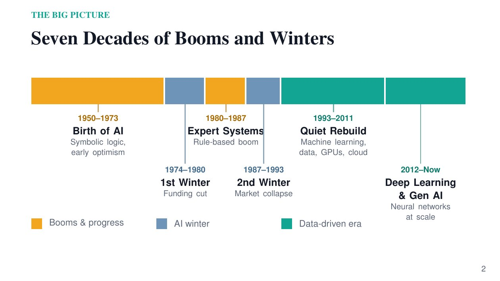

Project 1 · Visual timeline
From Turing to Transformers: A Timeline of AI
A 13-slide visual history of AI, from Alan Turing to generative AI, including the AI winters and the deep learning and cloud breakthroughs behind today's tools.
View Project →